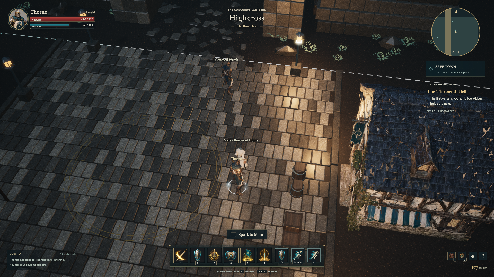
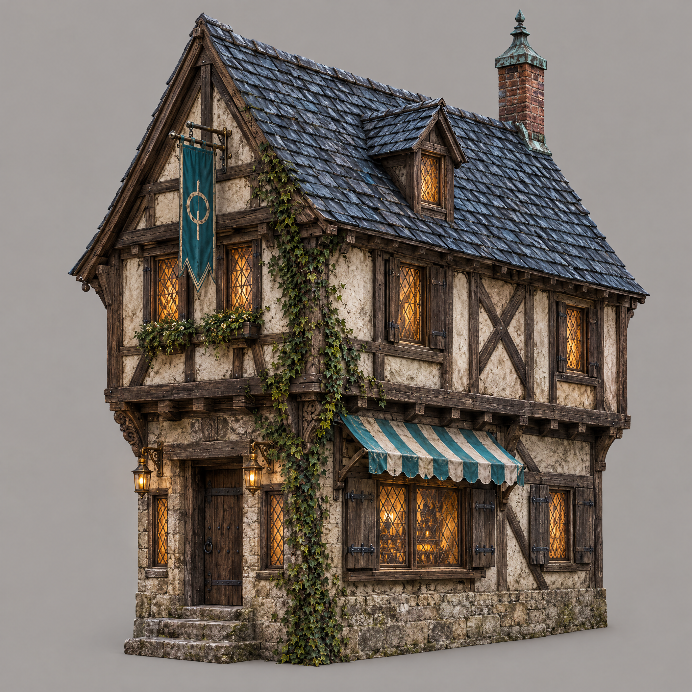
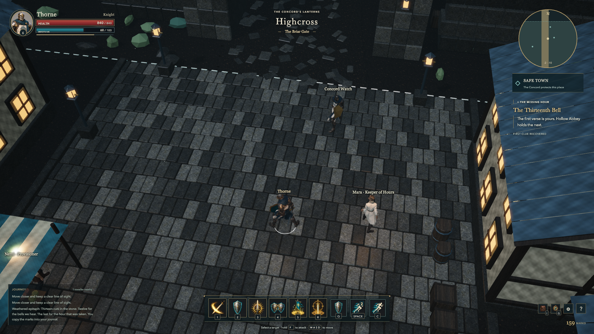
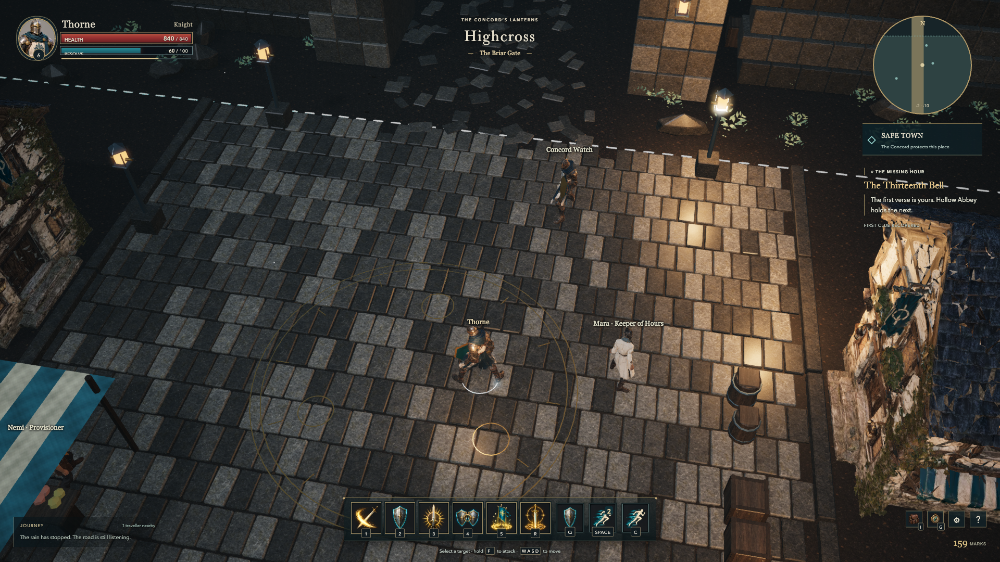
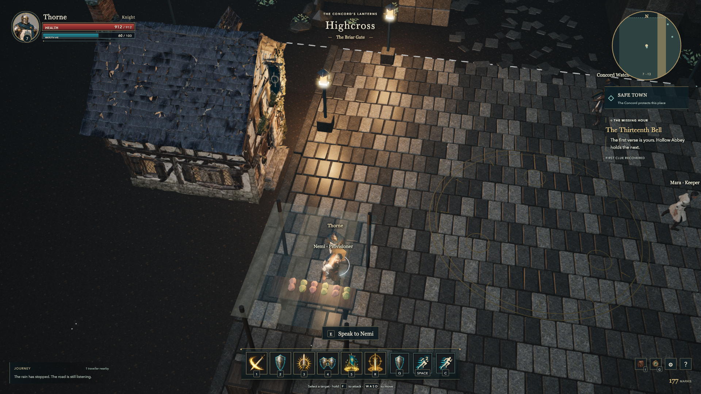
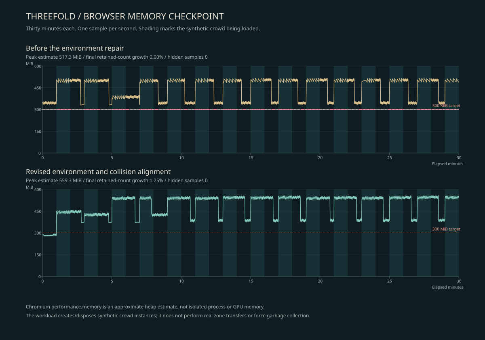

Timber, stone and lamplight.
The first road works. Now the town needs to feel inhabited—and remain readable when you actually play.
Playable checkpoint · art acceptance remains openThe first playable scene exposed a gap that static references could not: the interface and character silhouettes had a direction, but the town still looked coarse. I kept the work inside the representative checkpoint and made one merchant-house reference with Higgsfield, converted it with Meshy, then finished and assembled it in Blender.


The generated house arrived with more than two million triangles and compressed proportions. The local preparation reduces it to 18,000 triangles, restores a 6.5-metre square footprint and retains a steep 8.2-metre roofline. Four copies form the town edge. The original candidate and the unsuccessful narrow version are kept for comparison; this is a reusable prototype, not a finished architecture kit.


The environment pass puts small leaves on branches, replaces angular shrub shapes with ferns, adds the three-realm compass to the plaza and places warm light at actual lanterns. Three nearby lantern lights share a fixed budget, with a fourth light following the traveller. A crowd preflight exceeded the visible-triangle target, so tiny leaves were simplified from four triangles to two before the sustained rerun.




Walking to Nemi caught another defect: the market awning hid both people. It now fades near the traveller, as the gate arch and nearby canopies already do. I checked the ordinary gameplay camera and opened Nemi's dialogue after the repair. The earlier obstructed frame remains in the evidence.


The last integration review found that the house positions and the server's old collision boxes no longer agreed. The boxes now follow the scaled building footprints. A regression test checks blocked facades, blocked cross-house sightlines and open outer lanes. The full suite also exposed a test that stopped a fleeing player just outside town; it now waits for the authoritative safe-zone state before checking protection. The same review found missing bounds for the gate towers and astrolabe pedestal. Their server collision now matches the solid landmarks, with an open central arch and a circular path around the monument.
The new 75-second recording follows the return from the epitaph across the river and into town. It contains the actual browser world, live HUD and synthesized game sound. The character had already completed the clue. This recording precedes the final awning and leaf changes; its exact source fingerprint is retained instead of labelling it as footage of a later build.
The first full thirty-minute load/unload trace retained the same mesh, texture, material, skeleton and animation-group counts across fourteen measured unload phases. Its JavaScript heap nevertheless reached 517 MiB against a 300 MiB target. Both findings matter. Recording cleanup now releases its temporary canvases explicitly, but that change alone does not establish the cause or resolve the memory budget.
The revised thirty-minute run completed without hidden samples. Across fourteen measured disposal phases, meshes, textures, skeletons and animation groups returned to their initial counts; one additional material remained, a 1.25% increase. The approximate heap peaked at 559.35 MiB, so the 300 MiB target is still missed. This is a Chromium heap estimate, not an isolated game-process or GPU-memory measurement. The comparison below retains both runs and does not claim that recording cleanup solved the budget.


This bounded repair adds one Higgsfield job estimated at 2.75 credits and one completed Meshy task charged at 30 credits. The checkpoint totals are now fourteen Higgsfield jobs at 38.5 estimated credits and eighteen completed Meshy tasks at 224 verified consumed credits. Higgsfield billing is not independently verified; no currency conversion is claimed.